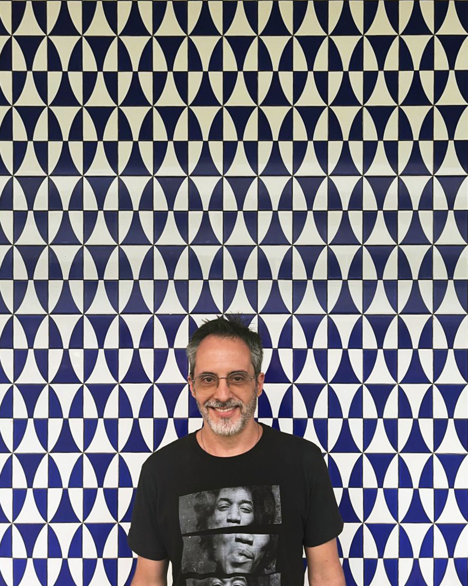

Quem somos

Pablo
Ferreira
Fundador e diretor geral da Muriel Filmes
Sou diretor, roteirista e editor freelancer com mais de duas décadas de experiência em produtoras de São Paulo. Formado em cinema pela ECA-USP, concluí em 2025 um mestrado na UnB sobre fenomenologia e o real no cinema.
Além de escrever e dirigir curta-metragens, documentários e filmes institucionais, dediquei minha carreira à edição e finalização de documentários para cinema e TV, trabalhando também como co-roteirista de séries documentais.
Adoro literatura, música, praia, yoga, rinocerontes, viajar e aprender coisas novas.
Explore